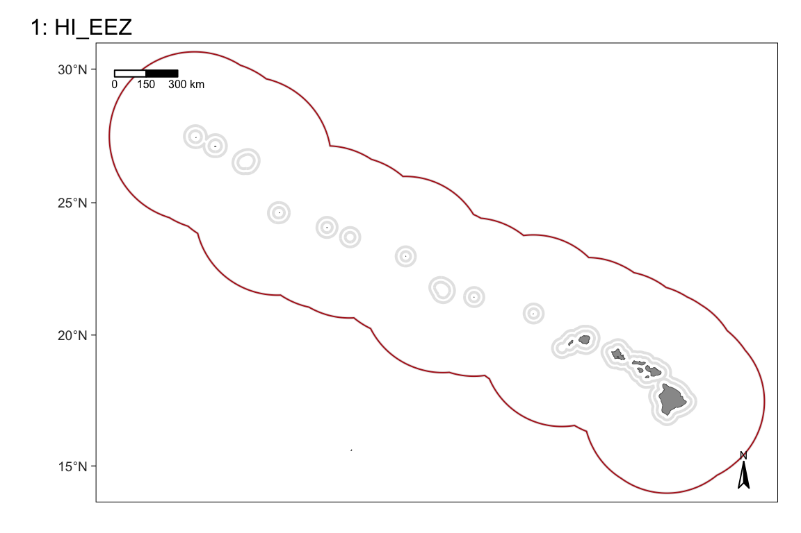

13 Strata gallery
This packages comes with several built-in datasets of geographic strata that are commonly used in NOAA/NMFS surveys. The functions strata_explore() and strata_select() were developed to help you explore those built-in options.
Central North Pacific

To acquire the filepath to one of these strata, pass the index (or indices) printed in the map titles above to the function strata_select():
This function returns a named list that can be passed directly to the strata argument in load_settings().
The second slot, $paths, contains the filepaths you would need to pass to the load_settings() function.